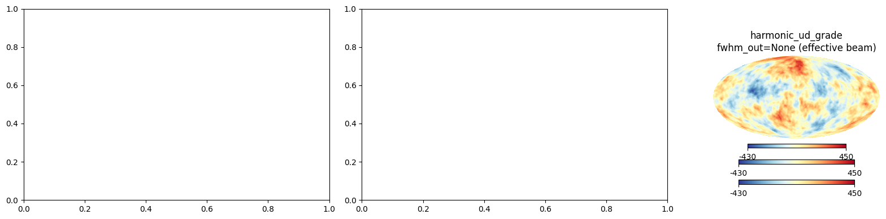

healpy 1.20.0b1 beta — harmonic_ud_grade for artifact-safe map downgrading
healpy 1.20.0b1 introduces harmonic_ud_grade for artifact-safe HEALPix map downgrading via spherical harmonics, with pixel-window and beam transfer corrections.
healpy 1.20.0b1 beta — harmonic_ud_grade for artifact-safe map downgrading
healpy 1.20.0b1 is now available as a beta release:
pip install --pre healpy==1.20.0b1
The headline feature is harmonic_ud_grade, a new function to change map NSIDE through spherical-harmonic transforms instead of pixel averaging. Compared to ud_grade, it suppresses aliasing artifacts by applying a bandlimit truncation with optional pixel-window and beam transfer corrections.
where \(p_\ell\) is the pixel window function and \(b_\ell\) the Gaussian beam transfer function.
This notebook demonstrates the difference between harmonic_ud_grade with and without the effective resolution beam (fwhm_out=0 vs fwhm_out=None).
import numpy as npimport healpy as hpimport matplotlib.pyplot as plthp.disable_warnings()print(f"healpy {hp.__version__}")
healpy 1.19.1.dev34+gb6c6692e5.d20260529
/tmp/ipykernel_3108949/3900260292.py:5: HealpyDeprecationWarning: The disable_warnings function is deprecated and may be removed in a future version.
hp.disable_warnings()
Generate a dust-like map
We create a synthetic dust-like map with a steep power spectrum (\(C_\ell \propto
\ell^{-2.5}\)) at NSIDE 512, then downgrade to NSIDE 64.
/tmp/ipykernel_3108949/1973081975.py:13: HealpyDeprecationWarning: "verbose" was deprecated in version 1.15.0 and will be removed in a future version.
m = hp.synfast(cl_dust, nside_in, lmax=lmax_in, verbose=False)
The pixel-space ud_grade map shows visible aliasing artifacts. The harmonic methods are cleaner. The effective beam option (fwhm_out=None) provides the smoothest result, suppressing Gibbs ringing from the sharp bandlimit cutoff.
/tmp/ipykernel_3108949/3632554495.py:17: UserWarning: This figure includes Axes that are not compatible with tight_layout, so results might be incorrect.
plt.tight_layout()

Power spectrum comparison
The power spectra reveal the key differences: - ud_grade leaks high-\(\ell\) power into low-\(\ell\) modes (aliasing) - harmonic_ud_grade with fwhm_out=0 truncates cleanly but shows a sharp cutoff at the output bandlimit - harmonic_ud_grade with fwhm_out=None applies the effective resolution beam, providing a smooth rolloff consistent with the Planck convention
For diffuse signals like Galactic dust where aliasing artifacts are most problematic, harmonic_ud_grade provides a significantly cleaner downgrade than ud_grade. The fwhm_out=None option applies a smooth beam rolloff following the Planck 2015 X convention, while fwhm_out=0 gives the sharpest bandlimit.